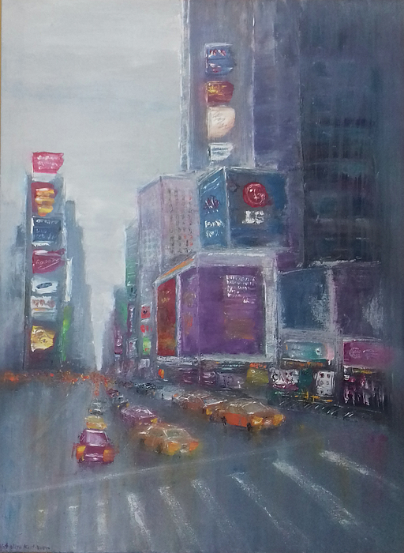

NY - Times Square
400$
Times Square
60*80sm
Original, signet, stretched
Definition of technique: the palette knife
"A la prima"
60*80sm
Original, signet, stretched
Definition of technique: the palette knife
"A la prima"